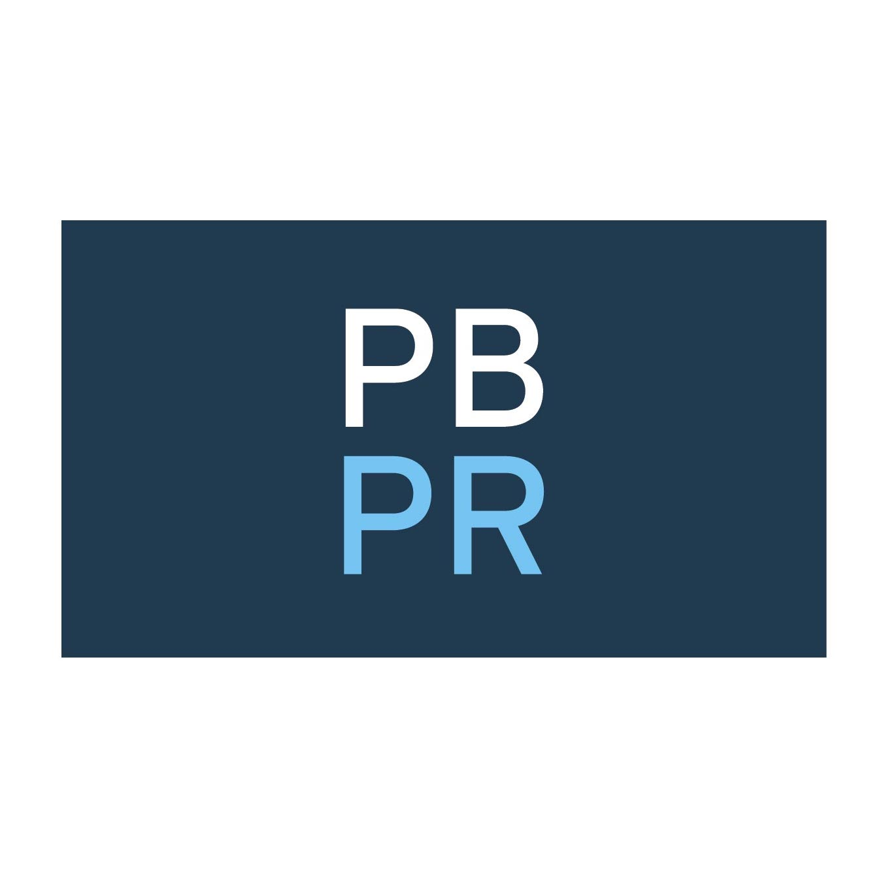
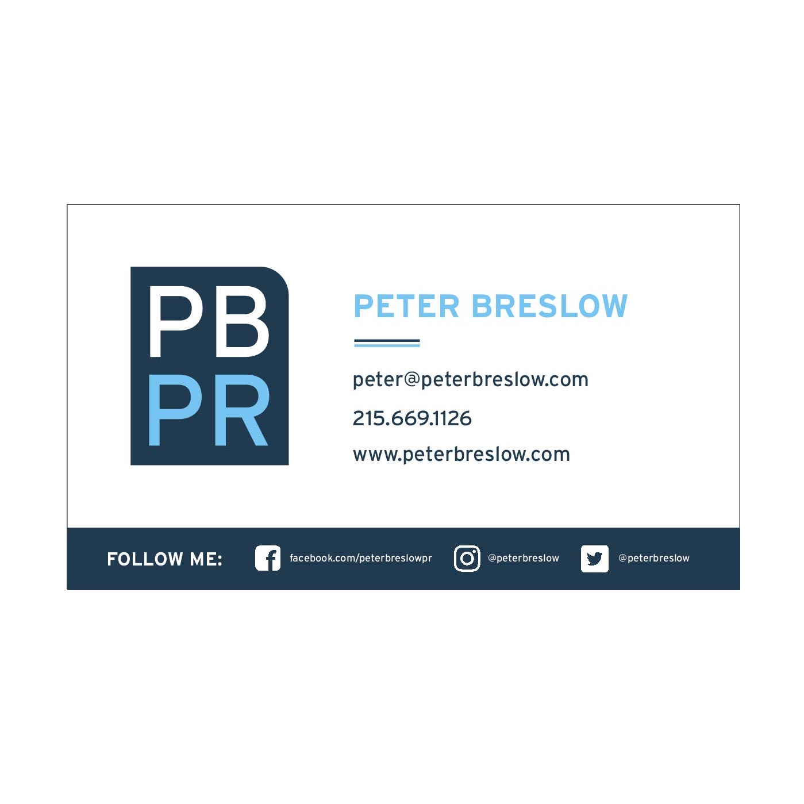

While working at PBPR, I recognized the need for a fresh and modern revamp to the
current company branding. I initiated this project and wound up crafting a brand-new
design from scratch. I embarked on an ambitious project that involved close
collaboration between a talented developer, the CEO of the company, and myself as the
project manager.
(I'm going to write more about the before and after)

